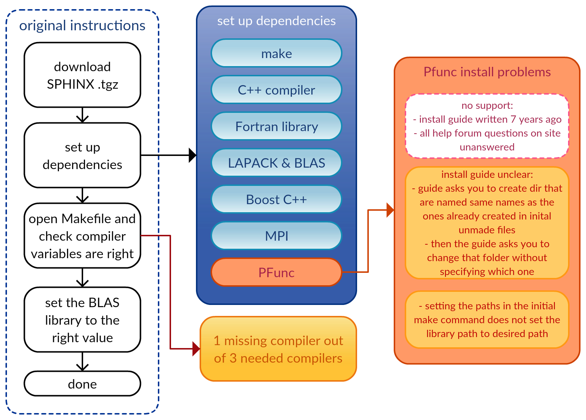

Dependency Trouble for Sphinx (GWAS tool)¶
The below diagram details the problem I encountered while downloading Sphinx on my Stampede allocation.
{kind=link}
As you see from the above picture, the white boxes were the original instructions in the README text for SPHINX. The dependency I could not get downloaded and installed was the PFunc library.
To get the other 6 libraries loaded into your cuurent environment enter the following lines:
- ::
- module load gcc/4.7.1 module load gcc/4.9.1 module load gcc/4.9.3 module load intel/13.0.2.146 module load referencelapack/3.5.0 module load boost/1.55.0
Problems Running PFunc¶
To follow along with the guide, enter the following in your src directory to get the PFunc download:
- ::
- wget –no-check-certificate http://www.coin-or.org/download/source/PFunc/PFunc-0.1.1.tgz tar -xzf PFunc-0.1.1.tgz
The PFunc README says to create a folder called “pfunc-install” and after running through the directions, and the cmake command (which I think is the command that will be compiling the files into a binary) the folder is still empty.
- ::
- /work/03813/ddc/iPlant/src/PFunc-0.1.1 /work/03813/ddc/iPlant/pfunc-install
Here is the installation guide written in the PFunc folder which has last been updated 7 years ago as of today.
- ::
For a clean installation process, we recommend an out-of-source build. However, the in-source build works just as well. Given below are the basic installation instructions for PFunc on Linux/OS X/AIX:
Get a copy of PFunc. For the sake of this installation guide, let us assume that PFunc’s sources have been checked out in the directory “pfunc”. Furthermore, let us assume that the absolute path is “/home/anon/pfunc”.
#cd /home/anon/ && mkdir pfunc-build
At the end of this step, we have the following directories:
- “/home/anon/pfunc”
- “/home/anon/pfunc-build”
- #cd /home/anon/pfunc-build
- #cmake /home/anon/pfunc -DCMAKE_INSTALL_PREFIX=/home/anon/pfunc-install
- #cd /home/anon/pfunc-build
Step above says to specify in the make command a folder called “pfunc-install” but the above instructions only mentioned creating a folder “pfunc-build”, so after trying multiple times with the install, I used the second folder “pfunc-build” in the make command:
cmake /work/03813/ddc/iPlant/src/PFunc-0.1.1/pfunc -DCMAKE_INSTALL_PREFIX=/work/03813/ddc/iPlant/PFunc-0.1.1/pfunc-build
The above command has an output that describes that the configuration and build is done and says:
-- Build files have been written to: /work/03813/ddc/iPlant/src/PFunc-0.1.1/pfunc-build
Going back to the installation guide:
- ::
At this step, we are configuring PFunc and have choosen to install the files in the local directory. Once configuration is done, the following targets are available to be built by the native build-system. i) “pfunc” -> builds the static library “libpfunc.a”
“tutorial” -> builds the tutorial if BUILD_TUTORIAL was ON. iii) “doc” -> build documentation if BUILD_DOCS was ON.
“all” -> builds all the selected targets. v) “clean” -> removes all the object files.
“install” -> installs the targets to the selected prefix. vii) “uninstall” -> does the obvious.
- “examples” -> builds examples if BUILD_EXAMPLES was ON.
e) #make <target-name> At this stage, we can build any of the targets mentioned in (e).
The “pfunc-build” directory now has the following sources:
CMakeCache.txt CMakeFiles cmake_install.cmake config.h Makefile
Moving on to directions e), the sentence is most likely talking about directions (d) when it says the targets mentioned in (e). So I type the command:
make pfunc
PFunc should create a static library in this directory but the make command does not work and gives me the following error:
login1.stampede(7)$ make pfunc
make: *** No rule to make target `pfunc'. Stop.
So in my frustration I go up one directory to /work/03813/ddc/iPlant/src/PFunc-0.1.1/pfunc and type “make pfunc” which gives me the error “Nothing to be done for ‘pfunc’” and “make” which gives me the error “No targets specified and no makefile found”. So then I type “cmake” but since I have already done this the current directory changes from:
AUTHORS
ChangeLog
CMake
CMakeLists.txt
doc
examples
INSTALL
lib
LICENSE
NEWS
peef
perf_tests
pfunc
pfunc-build
README
tutorial
to this
AUTHORS
CMakeCache.txt
CMakeLists.txt
examples
LICENSE
peef
pfunc-build
ChangeLog
CMakeFiles
config.h
INSTALL
Makefile
perf_tests
README
CMake
cmake_install.cmake
doc
lib
NEWS
pfunc
tutorial
which means the new files are:
config.h
Makefile
CMakeFiles
cmake_install.cmake
CMakeCache.txt
which are the exact files made by the cmake command of ii) d). And since the “make” and “make pfunc” command did not work in that directory, it is highly doubted it will work in this directory but I will try it anyways. As expected that did not work. I google “make target not found”, the error I’ve been getting since entering “make” into “pfunc-build” and the main “pfunc” directory. (There are two directories called “pfunc” so I will differentiate them by calling them: main “pfunc” and sub “pfunc”.) Stack Overflow tells me that the error is caused when it cannot find an hpp file in that person’s specific case. Since neither “pfunc-build” and the main “pfunc” had any hpp files, I decide to try the cmake command in the sub “pfunc” by calling”:
- ::
- cmake /work/03813/ddc/iPlant/src/PFunc-0.1.1/pfunc
This did nothing.
This is when I decide that I’ve thoroughly created to many directories in each directory and decide it’s best to start from scratch. So I rename my old PFunc directory and unzip the tar.
So now from the beginning I change into the main “pfunc” directory. I note all the sources are in the sub “pfunc” folder. I tried multiple variations and combinations of getting the “cmake” command to build the static library libpfunc.a and am unable to.
After looking up how to build a static library I found a ‘cmake page <https://github.com/beniz/libcmaes/issues/99>’_ that addressed similar issues.
The Solution¶
The solution is to go in the unzipped folder then into the “lib” folder and execute:
- cmake
- make
This creates the static library named libpfunc.a and had the following :ref:’cmake’ errors. Looking back I should’ve known better to go into the lib folder because it’s the only folder containing Makefile.
Now I can move the folder sub “pfunc” and “lib” in the main “pfunc” folder to my PFuncENTERVERSIONNUMBER********/stampede/bin.
The Next Steps: Connecting Last Needed Dependency back to SPHINX¶
I need to connect the static library located in /work/03813/ddc/iPlant/src/PFunc-0.1.1/lib to my dependencies in the SPHINX (GWAS tool).
I go back to /work/03813/ddc/iPlant/sphinx/stampede/bin/SPHINX/SPHINX_SCREENING_C++
Compiling SPHINX¶
In order to compile SPHINX: